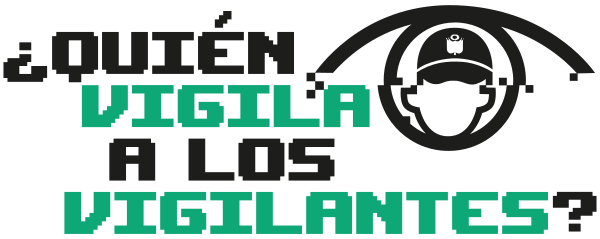

EN LAS REDES
EN LAS CALLES
CONSEJOS
RECURSOS
EN LAS REDES
EN LAS CALLES
CONSEJOS
RECURSOS
RECURSOS
Protección digital en protestas
Kit de cibercuidado para activistas
Posters descargables del proyecto
Guía fanzine